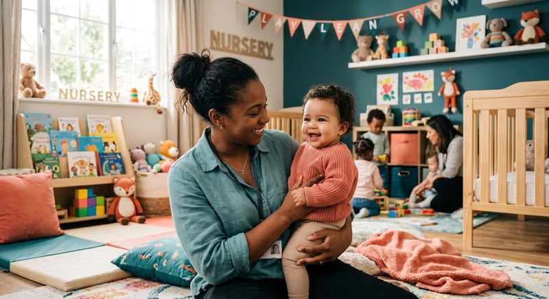
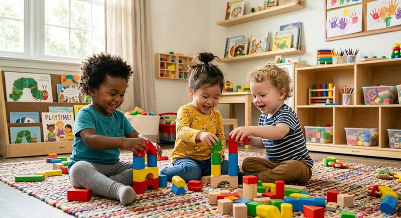
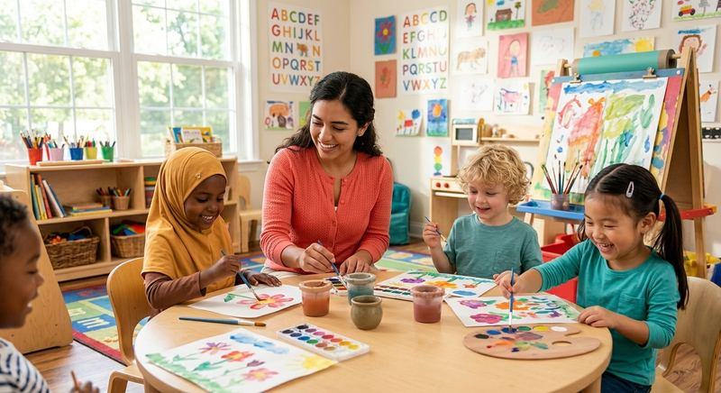
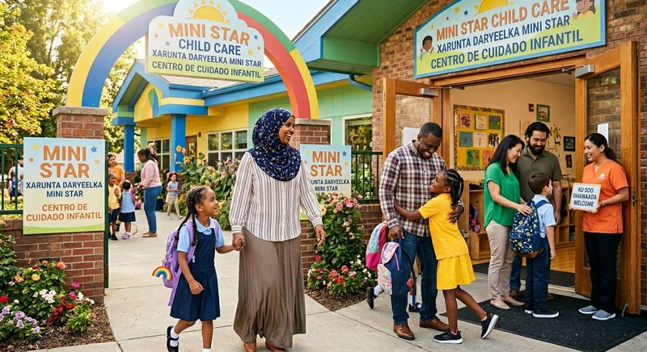

Welcome to Mini Star
Child Care
A safe, loving, and nurturing place where every child can learn, grow, and shine.
Every child is unique
At Mini Star Child Care, we provide a safe, loving, and nurturing place where every child can learn, grow, and shine. We care for children from birth to 12 years old and support each child's development through play, learning, creativity, and positive guidance.
Our goal is to give families peace of mind knowing their children are in a caring environment every day. We believe every child is unique, and we work hard to create a space where children feel happy, supported, and respected.
Come join the Mini Star Child Care family, where bright futures begin. ★
Built on love, trust, learning, and family support
We understand that choosing childcare is an important decision. That is why we are committed to providing a warm, home-like environment where children feel safe and welcome. Our caregivers focus on kindness, patience, and attentive care so each child receives the support they need to grow with confidence.
We believe children learn best through positive experiences, meaningful play, and caring relationships. At Mini Star Child Care, we help children build early social, emotional, and learning skills that prepare them for the future.
Our mission is simple: to care for children with love while helping them learn and thrive every day.
We raise whole children, not just well-behaved ones
At Mini Star, every child who walks through our doors is treated as a future leader, thinker, and contributor. Our structured curriculum is designed to develop children who are:
Structured, intentional, and responsive
Our caregivers don’t just supervise — they teach. Every day is purposeful:
Stay connected to your child’s learning every day
Through our parent portal, families can:
Beyond the basics — skills for life
What makes Mini Star different from ordinary daycare:
Structured curriculum for every age, birth to 12 years
Our research-based curriculum is tailored to each stage of development — building knowledge, character, and life skills from day one:

Infants 0–1 yr
Responsive care that supports every milestone from birth.
- Sensory Development: Sight, sound, touch, and movement exploration
- Language: Songs, rhymes, narrated routines, and responsive talk
- Motor Skills: Tummy time, reaching, grasping, rolling
- Emotional: Secure attachment, comfort, and caregiver trust-building

Toddlers 1–3 yrs
Building independence, language, and early thinking through play.
- Language: Vocabulary building, two-word phrases, early storytelling
- Cognitive: Cause & effect, sorting, shape & color recognition
- Social: Parallel play, sharing basics, turn-taking, self-expression
- Life Skills: Hand washing, tidying up, following simple routines
- Early Leadership: Choosing activities and helping caregivers

Preschoolers 3–5 yrs
School readiness through creativity, curiosity, and confidence.
- Literacy & Math: Pre-reading, counting, letters, early writing
- Critical Thinking: Problem-solving games and pattern recognition
- Creativity: Art projects, dramatic play, music & movement
- Leadership: Classroom helper roles, group projects, decision-making
- Financial Literacy: Saving concepts, pretend store play, value of work

School-Age 5–12 yrs
Expanding knowledge, leadership, and real-world life skills.
- Academics: Homework support, reading comprehension, math practice
- Critical Thinking: Strategy games, debates, research mini-projects
- Leadership: Peer mentoring, team challenges, goal setting
- Financial Literacy: Budgeting basics, earning, saving, smart spending
- Entrepreneurship: Mini business projects, creative problem-solving
10 Core Development Domains
Our curriculum spans every dimension of a child’s growth — academic, social, emotional, and life-skills — preparing them for school and beyond:
Every day at Mini Star includes:
- Structured learning aligned to each child’s age and development stage
- Hands-on creative play and exploration activities
- Social-emotional skill building and group interaction
- Caring, attentive supervision from trained caregivers
- Progress tracking shared with parents every week
Our program builds confident, independent children with a lifelong love for learning — not just a safe place to wait for pickup.
We're happy to welcome new families
We would love to hear from you
If you have questions about our child care services, enrollment, or openings, please contact Mini Star Child Care using the information below:
Serving families in SeaTac, Washington and the surrounding area. ★